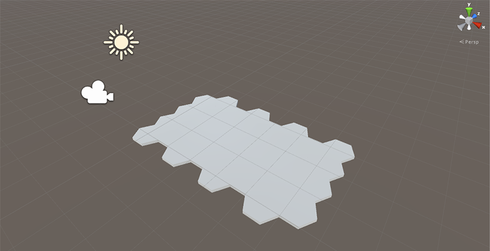

In this tutorial series we will look at how to create a hex tile map and use it in a simple game where we can place some buildings and move some units around on the map.
In part one we will write a script to generate the map at run time, using a hex model and width and height variables on the script. We will also write a script with basic camera controls to pan around and zoom in on the map.
So let's look at our HexMap script, this will be responsible for holding our 2D array of hexes. It also will have public Width and Height values for changing the size of the map at runtime.
[ExecuteInEditMode]
public class HexMap : MonoBehaviour
{
public int Width = 4;
public int Height = 8;
int m_width;
int m_height;
GameObject[,] m_hexes;
The private m_width and m_height values are used to check if the user has changed either of the values in the UI, m_hexes is our 2D grid of GameObjects that will represent each tile in the grid. Note that we want this script to execute in the editor so we use the ExecuteInEditMode flag for the class.
void Start ()
{
ResetHexMap();
}
Our Start function simply calls the ResetHexMap private function which we'll look at shortly, this will fill m_hexes.
void Update ()
{
if(RequiresReset())
{
DestroyHexMap();
ResetHexMap();
}
}
Our Update functions calls RequiresReset to check if any of our public variables have been changed and if so it resets the hex map, destroying it first.
bool RequiresReset()
{
return (
Width != m_width ||
Height != m_height
);
}
RequiresReset currently just checks if the public variables match our private variables, if any of them differe then it returns true, if all of them are the same then no reset is necessary and it returns false.
void DestroyHexMap()
{
for(int z = 0; z < m_height; ++z)
{
for(int x = 0; x < m_width; ++x)
{
if (Application.isPlaying)
{
GameObject.Destroy(m_hexes[x, z]);
}
else
{
GameObject.DestroyImmediate(m_hexes[x, z]);
}
}
}
}
DestroyHexMap calls GameObject.Destroy or GameObject.DestroyImmediate depending on if we are in editor mode on all the hexes in our grid. This must be called to ensure that the old grid is destroyed before creating a new one.
void ResetHexMap()
{
m_width = Width;
m_height = Height;
m_hexes = new GameObject[m_width, m_height];
for(int z = 0; z < m_height; ++z)
{
float rowXOffset = (z % 2 == 0) ? 0.0f : 0.75f;
for(int x = 0; x < m_width; ++x)
{
m_hexes[x, z] = (GameObject)Instantiate(Resources.Load("Models/hex"));
m_hexes[x, z].transform.position = new Vector3(x * 1.5f + rowXOffset, 0.0f, z * 0.433f);
}
}
}
}
This is the guts of the HexMap class where our tiles are generated. At the moment it simply creates an instance of our hex model which can be found here and moves it into the correct position. The model is 1 unit wide and 0.866 units high. The rowOffset is to account for each odd row starting further to the right of the even rows.
Just attach the script to an empty GameObject in the scene and let's see how it looks in the editor:
Not very impressive for now but we'll work on improving the look of it in future tutorials. For now let's take a look at a simple camera controller class to navigate our new map.
public class CameraController : MonoBehaviour
{
public float MovementSpeed = 0.25f;
public float ZoomSpeed = 2.0f;
public float ClosestZoom = 1.0f;
public float FurthestZoom = 8.0f;
void Start ()
{
}
We expose a couple of variables for controlling the speed with which the camera pans and zooms, this can be useful for fine tweaking later. We also add a couple of variables for controlling how close and how far away the camera can zoom.
void Update ()
{
Vector3 position = gameObject.transform.position;
float vertical = Input.GetAxis("Vertical");
float horizontal = Input.GetAxis("Horizontal");
float zoom = Input.GetAxis("Mouse ScrollWheel");
position.x += horizontal * MovementSpeed;
position.z += vertical * MovementSpeed;
position.y = Mathf.Max (ClosestZoom, Mathf.Min (FurthestZoom, position.y - zoom * ZoomSpeed));
gameObject.transform.position = position;
}
}
In the Update function we take the vertical, horizontal and mouse wheel inputs from the Unity and simply add them to the position of our camera. With the zoom we use the variables we set up previously to limit the height of the camera.
So let's have a look at how this works in game:
Quite choppy but it does what we need it to for now, we can address issues like better camera movement in later tutorials
In the next tutorial we'll look at putting down different tiles like grass, hills and forests to make our map a bit more interesting!